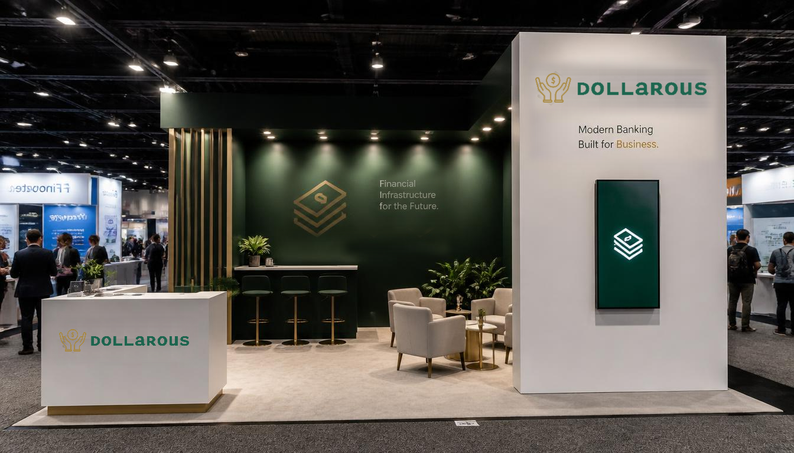

BoothTok
A trade show screen that needs no instructions, because every passerby already knows the gesture. Working app. Run it fullscreen on your own phone.
Concept render of the “BoothTok” interactive booth video playing at a trade show. Dollarous is a fictitious brand.
The Problem
The “pay attention to me” arms race is escalating, and it’s playing out tangibly on B2B show floors. As a valuable source of qualified leads, brands have their work cut out for them at trade shows: Get noticed, and be remembered.
Raffles, stunts, activations, photobooths... it’s a cutthroat scene when you’re trying to flag people down in person and your competition is louder, flashier, and right next to you.
The complication
So let’s say you do attract a potential client. You’ve spent a ton of budget on a puppy pen, a champagne-enhanced ballpit, an AI-powered VR lottery with the chance to win $5,000 on the spot. You got their interest, and more importantly you got their contact information. Will they remember you as the “ballpit booth”? Without relevance, your booth presence was an noisy, birefly exciting commercial that’s now over. The lead sits on your customer journey drip campaign collecting dust.
The solution
Eye-tracking research suggests that strolling conference attendees take 1-3 seconds before deciding to engage or walk right past your expensive display and smiling representatives. Those numbers sure look familiar, don’t they? Those are social timespans. They may be cruising, but they’re doing the same mental work as a phone-scroll.
BoothTok harnesses the inexplicable human desire to scroll through stuff, riding the lightweight mental work of curiosity and the need for entertainment, plus the ability to say “No. Next?” People scroll because they like to scroll, and they’re hoping the next thing will wow them. They give platforms many chances when on this journey in search of engagement.
Why the TikTok format?
- People take one look at it and know what to do with it.
- It’s cross generationally inclusive
- It draws the user in and lets them engage, laugh, wonder, and enjoy.
The “branded UGC” that makes up the library is up to you and your content strategy. The brand plays the part of director and cinematographer, showing what you want to be experienced, speaking in the language of video.
On a phone, open it in a new tab and add it to your home screen. It launches without browser chrome, fills the screen edge to edge, and behaves like the real thing.
How I made it
Using Claude Design and Claude Code and sourcing placeholder video from pixabay, pexels, and others, an overlay is placed that evokes the standard TikTok / Instagram Reels / YouTube Shorts controls. This is more signage than functionality, nobody is logged in. The PWA or app can be hosted on Vercel, Lovable or simply published in your own secure environment, transferred to any touch screen monitor -- which you’ll want to turn verticle, of course.